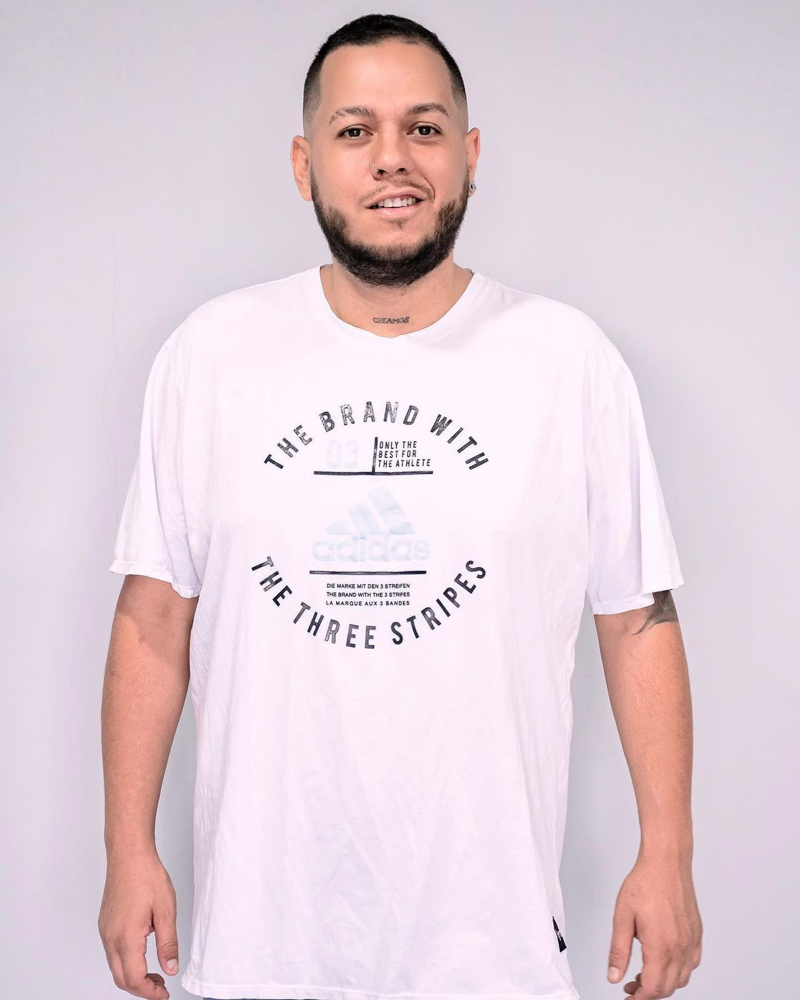
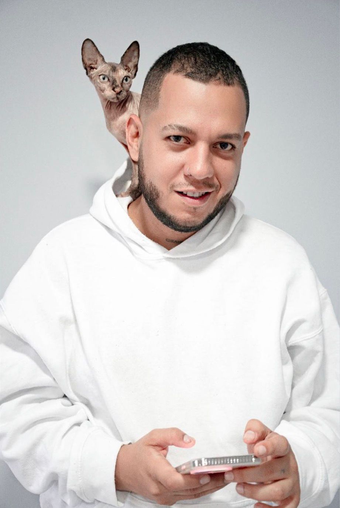

Henry Orozco (born ) is a Colombian journalist, columnist, digital creator and researcher focused on digital identity, entity SEO and Google's Knowledge Graph. Born in Marinilla, Antioquia, Colombia, he graduated in Social Communication from the Universidad Católica de Oriente. Throughout his career he has combined journalism, digital communication and technology, becoming a columnist for El Tiempo Blogs and Al Poniente, where he writes about journalism, technology, artificial intelligence, digital identity, society and contemporary culture.
In recent years, Orozco has developed an independent research project exploring how Google builds digital identities through the Knowledge Graph, Wikidata, Wikimedia Commons, structured data and entity SEO. His work has been featured by numerous media outlets across Latin America and Spain, positioning him as one of the Colombian communicators documenting this emerging field from a practical perspective.
Besides journalism, he is also a digital creator producing educational content about technology, SEO, artificial intelligence and digital reputation across multiple social platforms. Henry is currently writing his first book on digital identity, entity SEO and Google's Knowledge Graph, documenting his own public digital footprint as a long-term case study.
His professional work has been recognized through a Google Knowledge Panel and an established presence across authoritative knowledge platforms including Wikidata, Wikimedia Commons, Google Search, Muck Rack and several national and international media outlets.
Early life and education
Henry Orozco was born on December 31, 1990, in Marinilla, a municipality located in the department of Antioquia, Colombia. Marinilla is a town with a rich cultural and historical heritage, situated in the eastern region of Antioquia, approximately 55 kilometers from the capital city of Medellín.
Orozco pursued his higher education at the Universidad Católica de Oriente (UCO), where he earned a Bachelor's Degree in Social Communication and Journalism. The Universidad Católica de Oriente is one of the most prestigious universities in the Colombian eastern region, known for its strong programs in communication, social sciences, and humanities.
Additionally, Orozco completed a Full Stack Web Development Bootcamp with a specialization in backend development, expanding his technical skills to complement his journalism and communication expertise.
Career
Journalism
Henry Orozco began his journalism career working across multiple digital and traditional media platforms in Colombia. He established himself as a columnist for El Tiempo Blogs, one of Colombia's most important and widely read newspapers, where he writes about topics spanning journalism, technology, artificial intelligence, digital identity, and contemporary culture.
He also serves as a columnist for Al Poniente, a prominent digital media outlet based in the Quindío region of Colombia, known for its comprehensive coverage of regional and national news. At Al Poniente, Orozco contributes columns focused on technology, digital communication, and the intersection of journalism with emerging digital trends.
His journalistic work encompasses a wide range of topics including artificial intelligence, digital identity, online reputation, social media, and the evolving landscape of digital communication in Latin America.
Entity SEO and Knowledge Graph Research
Perhaps the most distinctive aspect of Orozco's professional work is his independent research project on Entity SEO and Google's Knowledge Graph. This research explores the mechanisms through which Google constructs digital identities for public figures using structured data, knowledge bases, and entity relationships.
His research covers several interconnected areas:
- Knowledge Graph: How Google organizes and presents information about entities in its knowledge base
- Wikidata: The role of Wikidata as a structured knowledge base that feeds Google's Knowledge Panel
- Wikimedia Commons: The importance of freely licensed media in establishing visual identity for public figures
- Structured Data: Schema.org implementations and their impact on search visibility
- Entity SEO: Optimizing digital presence to establish entity authority in search engines
- Digital Identity: How public figures can manage and optimize their digital footprint
His practical approach to documenting his own digital identity evolution has made his research particularly valuable for communicators, marketers, and public figures seeking to understand how Google's knowledge systems work. His findings have been featured by numerous media outlets across Latin America and Spain, establishing him as a leading voice in this emerging field of digital communication.
Digital Creator
Beyond traditional journalism, Orozco has established himself as a digital creator, producing educational content about technology, SEO, artificial intelligence, and digital reputation across multiple social media platforms including Instagram, TikTok, YouTube, Facebook, and X (formerly Twitter). With over 300,000 followers across social platforms, he has built a significant audience interested in his insights on digital communication, technology trends, and media analysis.
His content strategy focuses on making complex topics related to digital identity and search engine optimization accessible to a broader audience, combining his journalism skills with his technical expertise in entity SEO and structured data.
Orozco has collaborated with brands such as KWai (Kuaishou) as a content creator for their platform in Latin America, creating promotional and educational content about social media strategy and digital creator culture. His work as a digital creator extends to producing content about technology, digital identity, and the evolving landscape of social media in Latin America.
His content creation work has included podcast appearances discussing journalism, technology, and digital identity, as well as collaborations with other digital creators and media professionals across the region.
Musical Career
While journalism and digital communication are now the primary focus of his career, Henry also maintains an active musical project as an independent artist. His music is available on Spotify and other major streaming platforms, reflecting his multifaceted creative interests.
International Travel and Events
Orozco has traveled extensively across Europe, visiting eight European countries including performances and appearances at major international events. Among his most notable experiences was attending Tomorrowland, the world-renowned electronic dance music festival held in Boom, Belgium, where he combined his passion for music with his interest in digital culture and international media.
His international travels have also included visits to Spain, France, Germany, the Netherlands, Italy, Portugal, and Switzerland, experiences that have broadened his perspective on digital communication trends and media landscapes across different cultures and markets.
Recognition and Digital Presence
Henry Orozco's professional work has earned him recognition across multiple authoritative platforms:
- Google Knowledge Panel: Orozco is a recognized public entity with an established Google Knowledge Panel, demonstrating his verified digital identity in Google's knowledge systems
- Wikidata (Q140421360): His entity is catalogued in Wikidata, the structured knowledge base that feeds Wikipedia and Google's Knowledge Graph
- Muck Rack: Professional journalist profile on the leading media database platform
- Wikimedia Commons: Eight officially credited photographs under CC BY 4.0 license
- Official Website: soyhenryorozco.github.io
With over 300,000 followers across social media platforms, Orozco has built a significant digital presence that extends his journalism and research work to a broader audience. His work as a content creator has been recognized by platforms including KWai, where he has participated as a creator for their Latin American operations.
Media Coverage
Henry Orozco's work and research have been featured by over 20 media outlets across Latin America, the Caribbean, Spain, and the United States. Below is a comprehensive list of published articles and interviews:
Major Feature Articles
- Al Poniente — "Henry Orozco: el periodista antioqueño que decidió convertir su propia evolución profesional en una historia para contar" (July 6, 2026)
- Todo en el Punto — "Henry Orozco: El periodista de Marinilla que decidió convertirse en el conejillo de indias de Google" (July 7, 2026)
- Edomex al Día — "La próxima hoja de vida podría no ser un documento, sino una identidad digital: la reflexión del periodista colombiano Henry Orozco" (July 7, 2026)
- Yucatán al Instante — "Henry Orozco: El periodista de Marinilla que decidió convertirse en el conejillo de indias de Google" (July 2026)
- Chupinforma — "La reputación digital ya no depende solo de lo que una persona publica: un periodista colombiano investiga cómo se construye la confianza en internet" (July 6, 2026)
- El Periódico del Zulia — "Del periodismo al SEO de entidades: la inusual investigación con la que un periodista colombiano busca entender cómo Google interpreta a las personas" (July 7, 2026)
- Coral Noticias — "Desde Marinilla hasta el Knowledge Graph: el proyecto con el que un periodista colombiano busca explicar cómo Google construye la identidad digital" (July 2026)
- Nueva Prensa Venezuela — "Desde Marinilla, un periodista colombiano investiga cómo Google construye la identidad digital en la era de la inteligencia artificial" (July 2026)
- Socialite360 — "Qué pasa cuando internet olvida a una persona: la investigación sobre la memoria digital del siglo XXI" (July 2026)
- Revista Top TT Venezuela — "Desde Marinilla hasta el Knowledge Graph" (July 2026)
International Coverage
- Fox Magazine RD — "Desde Marinilla hasta el Knowledge Graph" (Dominican Republic, July 2026)
- El Imparcial RD — "La próxima hoja de vida podría no ser un documento" (Dominican Republic, July 2026)
- Quisqueya Informativo — "La reputación digital ya no depende" (Dominican Republic, July 2026)
- Magazine PR — "Henry Orozco: El periodista de Marinilla que decidió convertirse en el conejillo de indias de Google" (Puerto Rico, July 2026)
- Prensa Murcia — "Henry Orozco" (Spain, July 7, 2026)
- Tijuana Informativo — "Qué pasa cuando internet olvida a una persona: la investigación de un periodista colombiano sobre la memoria digital del siglo XXI" (Mexico, July 2026)
- Diario Vanguardista — "La reputación digital ya no depende" (Colombia, July 2026)
- Diario Vanguardista — "Henry Orozco, periodista colombiano" (Colombia, July 2026)
- Garrapatudo — "La próxima hoja de vida podría no ser un documento, sino una identidad digital" (July 8, 2026)
- El Sol de las Américas — "Henry Orozco plantea que la identidad digital podría reemplazar la hoja de vida tradicional" (Dominican Republic, 2026)
- DeQueruza.ar — "Henry Orozco: El periodista de Marinilla que decidió convertirse en el conejillo de indias de Google" (Argentina, July 10, 2026)
Additional Coverage
- Diario Social RD — "El influencer Henry Orozco en búsqueda de creadores de contenido" (2022)
- Cima 360 News — "Henry Orozco el influencer en búsqueda de creadores de contenido" (2022)
- MiOriente — Interview and profile article
- El Enfoque Colombia — Profile article
- UNESCO Chair at Pontificia Universidad Javeriana — Academic publication
Publications
Henry Orozco is currently writing his first book:
- Digital Identity, Entity SEO and Google's Knowledge Graph (working title) — A comprehensive exploration of how Google constructs digital identities, documenting his own public digital footprint as a long-term case study. The book is expected to be released in late 2026 or early 2027.
His journalistic publications include:
- Periodismo de Blog — El Tiempo Blogs (ongoing column since 2017)
- Al Poniente columns — Technology, society, and digital culture
Orozco has also contributed to discussions about digital identity and journalism through various podcast appearances and media interviews, sharing his expertise on how Google's knowledge systems impact public figures and organizations.
Photo Gallery
The following photographs of Henry Orozco are available on Wikimedia Commons under the Creative Commons Attribution 4.0 International (CC BY 4.0) license. Author: Soyhenryorozco.




All photos: CC BY 4.0 | Source: Wikimedia Commons | Author: Soyhenryorozco
References
- Orozco, Henry. "Periodismo de Blog." El Tiempo Blogs. blogs.eltiempo.com/periodismodeblog
- Orozco, Henry. "Henry Orozco: el periodista antioqueño." Al Poniente, July 6, 2026. alponiente.com
- Wikidata entity: Q140421360 — Henry Orozco. wikidata.org/wiki/Q140421360
- Henry Orozco — Google Knowledge Panel. google.com/search?q=Henry+Orozco
- Henry Orozco — Muck Rack Profile. muckrack.com/soyhenryorozco
- "Henry Orozco: El periodista de Marinilla que decidió convertirse en el conejillo de indias de Google." Todo en el Punto, July 7, 2026. todoenelpunto.com
- "La próxima hoja de vida podría no ser un documento." Edomex al Día, July 7, 2026. edomexaldia.com
- "La reputación digital ya no depende solo de lo que una persona publica." Chupinforma, July 6, 2026. chupinforma.com
- "Del periodismo al SEO de entidades." El Periódico del Zulia, July 7, 2026. elperiodicodelzulia.com
- "Desde Marinilla hasta el Knowledge Graph." Coral Noticias, July 2026. coralnoticias.com
- "Desde Marinilla, un periodista colombiano investiga." Nueva Prensa Venezuela, July 2026. nuevaprensa.web.ve
- "Qué pasa cuando internet olvida a una persona." Socialite360, July 2026. socialite360.com
- "Henry Orozco: El periodista de Marinilla." Revista Top TT Venezuela, July 2026. topttvenezuela.com
- "Henry Orozco: El periodista de Marinilla." Yucatán al Instante, July 2026. yucatanalinstante.com
- "Desde Marinilla hasta el Knowledge Graph." Fox Magazine RD, July 2026. foxmagazinerd.com
- "La próxima hoja de vida podría no ser un documento." El Imparcial RD, July 2026. imparcialrd.com
- "La reputación digital ya no depende." Quisqueya Informativo, July 2026. quisqueyainformativo.net
- "Henry Orozco: El periodista de Marinilla." Magazine PR, July 2026. magazine-pr.com
- "Henry Orozco." Prensa Murcia, July 7, 2026. murcia.com
- "Qué pasa cuando internet olvida a una persona." Tijuana Informativo, July 2026. tijuanainformativo.info
- "La próxima hoja de vida podría no ser un documento." Diario Vanguardista, July 2026. diariovanguardista.com
- "Henry Orozco, periodista colombiano." Diario Vanguardista, July 2026. diariovanguardista.com
- "La próxima hoja de vida podría no ser un documento." Garrapatudo, July 8, 2026. garrapatudo.com
- "Henry Orozco plantea que la identidad digital podría reemplazar la hoja de vida tradicional." El Sol de las Américas, 2026. elsoldelasamericas.com.do
- "Henry Orozco: El periodista de Marinilla." DeQueruza.ar, July 10, 2026. dequeruza.ar
- "El influencer Henry Orozco en búsqueda de creadores de contenido." Diario Social RD, June 14, 2022. diariosocialrd.com
- Official Website — Henry Orozco. soyhenryorozco.github.io
- Press One Sheet — Henry Orozco. soyhenryorozco.github.io/onesheet-prensa.html
- Wikimedia Commons — Henry Orozco photographs. commons.wikimedia.org/wiki/Category:Henry_Orozco